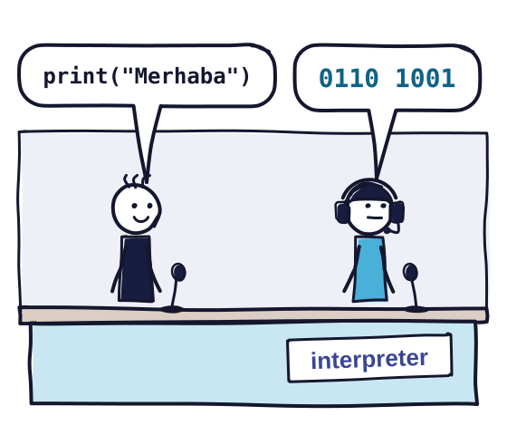
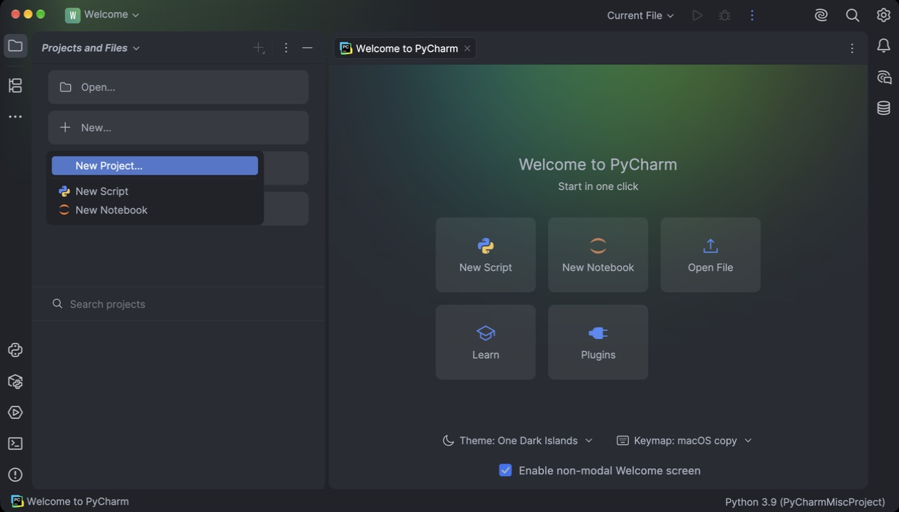
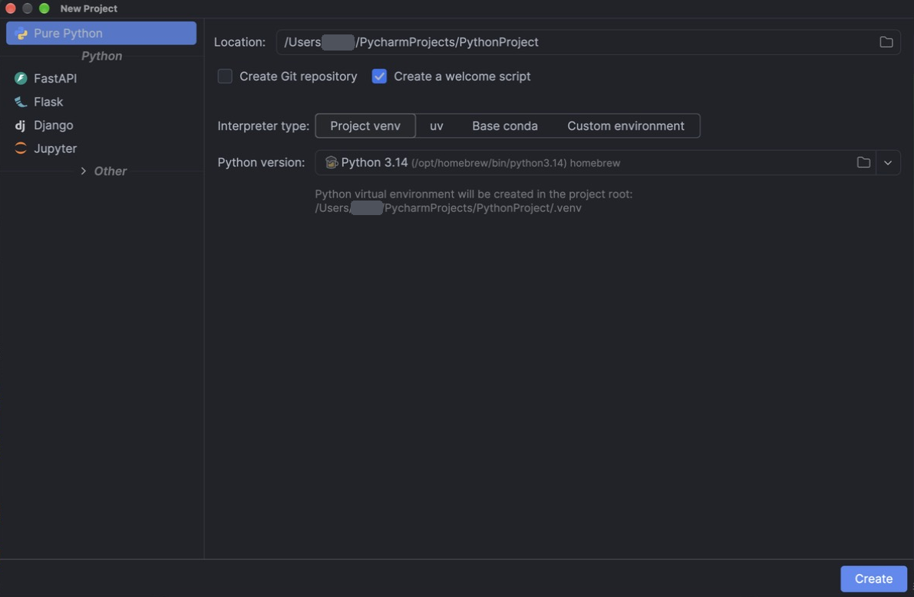
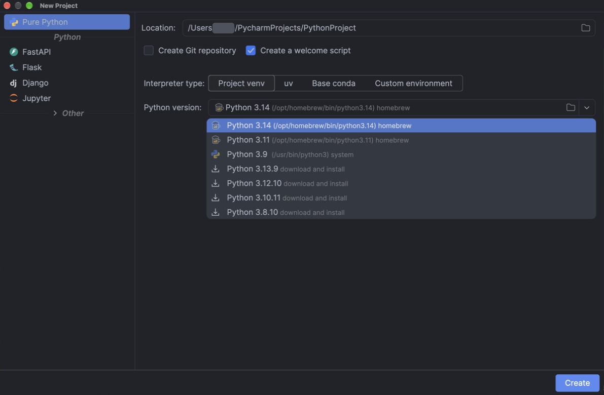
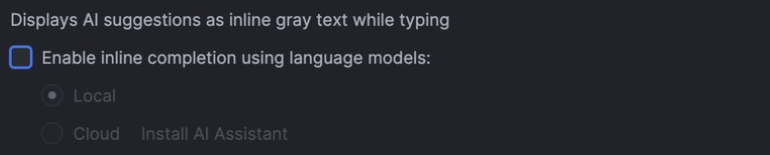
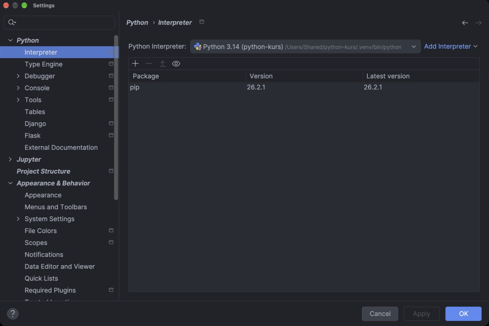
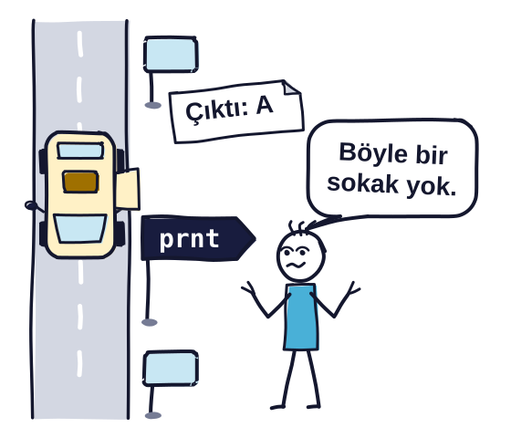
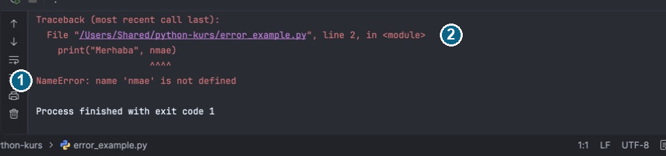

Bu beş adımın sonunda Python 3.14 ve PyCharm bilgisayarınızda kurulu ve çalışır durumda olacak.
Adımları ilk dersten önce, derse getireceğiniz dizüstü bilgisayarda yapın. 2. adımdaki öğrenci lisansının onayı e-postayla geliyor, o adıma erken başlayın.
Gereksinimler
| Windows | macOS | |
|---|---|---|
| İşletim sistemi | Windows 10 ya da 11 | macOS 15 ya da 26 |
| İşlemci | x64 ya da ARM64 | Apple Silicon ya da Intel |
| RAM | En az 8 GB | |
| Boş disk alanı | 10 GB | |
Değerleri JetBrains'in PyCharm sistem gereksinimleri sayfasından aldım. PyCharm Chromebook, iPad ve Android tabletlerde çalışmıyor. Elinizde yalnızca böyle bir cihaz varsa ilk dersten önce dersin WhatsApp grubuna yazın.
1. Python 3.14
Python 3.15, 9 Ekim 2026'da çıktı. Araçların yeni sürüme uyması zaman aldığı için derste 3.14 kullanacağız. Bilgisayarınızda 3.13 ya da 3.15 kuruluysa onunla da devam edebilirsiniz.
Windows
- Python 3.14.8 sürüm sayfasını açın.
- Sayfanın sonundaki Files tablosunda Windows installer (64-bit) bağlantısına tıklayın. Sayfanın üstündeki Download Python install manager düğmesi başka bir araç indirir, onu kullanmayacağız.
- İşlemciniz Snapdragon ise bunun yerine Windows installer (ARM64) satırını seçin. İşlemcinin adı Ayarlar › Sistem › Hakkında ekranında yazar.
- İnen
python-3.14.8-amd64.exeya dapython-3.14.8-arm64.exedosyasını çalıştırın. - İlk ekranın altındaki Add python.exe to PATH kutusunu işaretleyin. Bu kutu işaretliyse
pythonkomutu Komut İstemi'nde de çalışır. - Install Now'a tıklayın. Setup was successful yazısı çıkınca Close ile kapatın.
- Başlat menüsünde
cmdyazıp Komut İstemi'ni açın,python --versionyazıp Enter'a basın.Python 3.14.8yazmalı.
macOS
- Python 3.14.8 sürüm sayfasını açın.
- Download macOS installer bağlantısına tıklayın. Aynı dosya sayfanın sonundaki Files tablosunda da var.
- İnen
python-3.14.8-macos11.pkgdosyasını açıp kurulum penceresindeki adımları geçin. Mac'iniz parolanızı sorabilir. - Cmd + Space ile Spotlight'ı açın,
Terminalyazıp Terminal'i açın. python3 --versionyazıp Enter'a basın.Python 3.14.8yazmalı.
Komutun adı Windows'ta python, macOS'ta python3. Derste kodu PyCharm'da çalıştıracağız, bu komutu yalnızca kurulumu kontrol etmek için kullandık.
2. PyCharm ve öğrenci lisansı
Windows
- PyCharm indirme sayfasından Windows için
.exedosyasını indirin. Snapdragon işlemcili bilgisayarlarda ARM64 sürümünü seçin. - Dosyayı çalıştırıp kurulum sihirbazını Next ile geçin. Seçenek kutularını işaretlemeniz gerekmiyor.
- Kurulum bitince PyCharm'ı Başlat menüsünden açın.
macOS
- PyCharm indirme sayfasından macOS için
.dmgdosyasını indirin. Apple Silicon ve Intel için ayrı dosyalar var. Apple menüsü › Bu Mac Hakkında ekranında Çip satırı varsa Apple Silicon, İşlemci satırında Intel yazıyorsa Intel sürümünü seçin. .dmgdosyasını açıp PyCharm'ı Uygulamalar klasörüne sürükleyin.- PyCharm'ı Uygulamalar klasöründen ya da Spotlight'tan açın.
PyCharm ilk açılışta Pro sürümün denemesini başlatıyor, derste kullanacağımız her şey deneme bitince de ücretsiz çalışıyor.
Öğrenci lisansı
JetBrains, Hacettepe e-posta adresiyle başvuran öğrencilere ücretsiz lisans veriyor, bu lisansla Pro özellikler de açık kalıyor.
- JetBrains'in öğrenci lisansı başvuru formunu açın.
- Formu
@hacettepe.edu.truzantılı e-posta adresinizle doldurup gönderin. - Bu adrese gelen JetBrains e-postasındaki bağlantıyı açın. Lisans koşullarını okuyup kabul edin, sonra bir JetBrains hesabı açın ya da hesabınız varsa ona girin.
- PyCharm'da Help › Manage Subscriptions penceresini açın. Windows'ta bu menü sol üstteki ana menü düğmesinin altında.
- Pencerenin sol altındaki Log in düğmesiyle aynı hesaba girin ve listede görünen öğrenci lisansını Activate ile etkinleştirin.
Onay gelene kadar sonraki adımlara geçebilirsiniz.
3. python-kurs projesi
Derslerde yazacağımız bütün dosyalar python-kurs adlı tek bir PyCharm projesinde duracak.
PyCharm kodu çalıştırmak için bilgisayardaki bir Python'u kullanır, buna interpreter (yorumlayıcı) diyoruz. Hangi Python'u kullanacağını projeyi açarken seçeceksiniz.

Yolunda Türkçe karakter ya da boşluk olan klasörler ve OneDrive'ın eşitlediği klasörler bazı araçlarda sorun çıkarıyor. Bu yüzden proje için şu klasörü kullanın:
Windows
C:\python-kurs
Masaüstü ve Belgeler çoğu bilgisayarda OneDrive'a bağlı, Windows kullanıcı adınızda da Türkçe karakter olabilir. Bu yüzden projeyi doğrudan C:\ altında açıyoruz.
macOS
/Users/mehmet/python-kurs
mehmet yerine kendi kullanıcı adınızı yazın, Location alanında /Users/'tan sonra gelen kısım odur. Masaüstü ve Belgeler iCloud'a bağlı olabildiği için klasörü doğrudan ev klasörünüzde açıyoruz.
- PyCharm'ın karşılama ekranında New... düğmesine tıklayıp açılan listeden New Project'i seçin (Şekil 1). Açık bir proje varsa File › New Project menüsünü kullanın.

- Soldaki listede Pure Python seçili olsun.
- Location alanındaki yolu silip yukarıdaki yolu yazın. Proje adı yolun son kısmından,
python-kursolarak gelir. - Create a welcome script kutusunun işaretini kaldırın.
- Interpreter type olarak Project venv seçili kalsın. PyCharm proje klasöründe
.venvadında bir klasör açar ve proje Python'u bu klasörden kullanır. - Python version listesinden 3.14'ü seçin (Şekil 2).

Listede 3.14'ün yanında download and install yazıyorsa 3.14 bilgisayarınızda kurulu değil demektir. O satırı seçerseniz PyCharm Python'u python.org'dan indirip kurar (Şekil 3).
macOS'ta listede /usr/bin/python3 yolundaki Python 3.9 da görünebilir, onu seçmeyin. macOS'un geliştirici araçlarıyla gelen bu eski sürümü kurulum testi kabul etmiyor.

- Create'e tıklayın. PyCharm ilk açılışta dosyaları tarıyor, alttaki ilerleme çubuğu bitene kadar bekleyin.
Soldaki Project penceresinde python-kurs klasörünü, sağ alttaki durum çubuğunda da Python 3.14'ü görmelisiniz.
4. Inline completion'ı kapatma
PyCharm siz yazarken bir dil modeliyle satırın devamını gri yazıyla öneriyor. Derste kodu kendimiz yazacağız, o yüzden bu öneriyi kapatın.
- Windows'ta Ctrl + Alt + S, macOS'ta Cmd + , ile Settings penceresini açın.
- Soldaki listede Editor › General › Code Completion › Inline sayfasına gidin.
- Enable inline completion using language models kutusunun işaretini kaldırıp OK'e tıklayın (Şekil 4).

5. Kurulum testi
- Soldaki Project penceresinde
python-kursklasörüne sağ tıklayıp New › Python File'ı seçin (Şekil 5).

- Ad olarak
kurulum_testiyazıp Enter'a basın. PyCharm dosyayıkurulum_testi.pyolarak açar. - Aşağıdaki kodu kopyalayıp bu dosyaya yapıştırın. Dosyayı kurulum_testi.py bağlantısından da indirebilirsiniz.
# Kurulum testi: bu dosyayı PyCharm'da çalıştırın.
import sys
version = sys.version.split()[0]
print("Python sürümü:", version)
if sys.version_info < (3, 10):
print("Bu sürüm eski.")
print("Kurulum sayfasındaki Sık karşılaşılan sorunlar bölümüne bakın.")
else:
name = input("Adınızı yazıp Enter'a basın: ")
print("Teşekkürler " + name + ", kurulumunuz tamam.")- Pencerenin üstündeki çalıştırma listesinde Current File seçili olsun, yanındaki yeşil Run düğmesine tıklayın. Windows'ta Ctrl + Shift + F10, macOS'ta Ctrl + Shift + R kısayolu da aynı işi yapar.
- Altta Run penceresi açılır ve program adınızı sorar. Run penceresinin içine tıklayıp adınızı yazın ve Enter'a basın.
Python sürümü: 3.14.8 Adınızı yazıp Enter'a basın: Fatih (sizin yazdığınız) Teşekkürler Fatih, kurulumunuz tamam.
İlk satırda projenin Python sürümü, son iki satırda da adınız görünmeli. Program Bu sürüm eski yazıyorsa proje eski bir Python'la açılmış demektir, Sık karşılaşılan sorunlar bölümündeki ilk maddeye bakın.
Sık karşılaşılan sorunlar
No Python interpreter configured uyarısı ya da Bu sürüm eski çıktısı
- Settings penceresini açıp Python › Interpreter sayfasına gidin (Şekil 6).
- Listede 3.14 ile kurulmuş bir ortam varsa onu seçip OK'e tıklayın.
- Yoksa Add Interpreter › Add Local Interpreter'ı seçin, Virtualenv türünde Base Python olarak 3.14'ü seçip OK'e tıklayın.

3.14, Python version listesinde hiç görünmüyor
- PyCharm'ı kapatın, 1. adımdaki kurulumu yapın ve PyCharm'ı yeniden açın.
- Hala görünmüyorsa Interpreter type olarak Custom environment'ı seçin ve Base Python listesinin yanındaki düğmeyle şu dosyayı gösterin:
Windows
C:\Users\mehmet\AppData\Local\Programs\Python\Python314\python.exe
Buradaki mehmet sizin Windows kullanıcı adınız.
macOS
/Library/Frameworks/Python.framework/Versions/3.14/bin/python3
Run başka bir dosyayı çalıştırıyor
- Pencerenin üstündeki çalıştırma listesini açıp Current File'ı seçin. Run o zaman editörde açık olan dosyayı çalıştırır.
Run'a basınca program duruyor, sonuç gelmiyor
- Program büyük ihtimalle adınızı bekliyor. Alttaki Run penceresinin içine tıklayıp adınızı yazın ve Enter'a basın.
Yazdığınız ad kodun içine girdi
- Adı editöre yazmışsınız. Windows'ta Ctrl + Z, macOS'ta Cmd + Z ile geri alın.
- Programı yeniden çalıştırın, adı yazmadan önce Run penceresinin içine tıklayın.
SyntaxError: invalid character '“' (U+201C)
- Kodu WhatsApp'tan ya da bir belgeden kopyaladığınızda düz tırnak
"eğik tırnağa“ ”dönüşebilir. Python eğik tırnağı tanımaz. - Error message'ın gösterdiği satırda tırnakları silip klavyeden yeniden yazın.
File "…/python-kurs/deneme.py", line 1
print(“Selam”)
^
SyntaxError: invalid character '“' (U+201C)
NameError: name 'prınt' is not defined. Did you mean: 'print'?
- Türkçe klavyede
iyerine noktasızıyazılmış. Error message'ın son satırı hatanın adını ve açıklamasını verir. - Mesajda
line 1ile gösterilen satırdaprıntyerineprintyazın.
Traceback (most recent call last):
File "…/python-kurs/deneme.py", line 1, in <module>
prınt("Selam")
^^^^^
NameError: name 'prınt' is not defined. Did you mean: 'print'?

NameError'ı olmayan bir sokağa sapmaya çalışan dolmuşa benzetebilirsiniz. Önceki satırlar çalışır, program hatalı satırda durur ve sonrakilere hiç geçmez.Şekil 7'de başka bir NameError var, bu kez PyCharm'ın Run penceresinde. Satır nmae adını kullanıyor ama programda böyle bir isim yok, ^^^^ işaretleri de bu adın altında duruyor. PyCharm error message'ı kırmızıyla gösteriyor.

NameError.Windows'ta python yazınca Microsoft Store açılıyor ya da Python was not found yazıyor
- Kurulumda Add python.exe to PATH kutusu işaretlenmemiş. PyCharm Python'u kendisi bulduğu için derste bu bir sorun çıkarmaz.
- Kurulumu Komut İstemi'nde
py --versionyazarak yine de kontrol edebilirsiniz. pythonkomutunu da açmak isterseniz kurulum dosyasını yeniden çalıştırıp Modify'ı seçin. Optional Features sayfasını Next ile geçin, Advanced Options sayfasında Add Python to environment variables kutusunu işaretleyip Install'a tıklayın. Sonra yeni bir Komut İstemi penceresi açın.
macOS'ta python3 --version 3.9 yazıyor ya da geliştirici araçlarını kurmak isteyen bir pencere açılıyor
- Python 3.14 henüz kurulmamış ya da Terminal penceresi kurulumdan önce açılmış. Açılan pencereyi kapatın, gerekirse 1. adımdaki kurulumu yapın.
- Yeni bir Terminal penceresi açıp
python3 --versionkomutunu yeniden yazın.
Proje klasörünün yolunda Türkçe karakter var ya da klasör OneDrive'da
- File › New Project ile projeyi 3. adımdaki yolda yeniden oluşturun.
kurulum_testi.pydosyasını yeni klasöre taşıyın.
Program bitmiyor
- Run penceresindeki kırmızı kare Stop düğmesine tıklayın. Windows'ta Ctrl + F2, macOS'ta Cmd + F2 kısayolu da programı durdurur.
Burada olmayan bir sorunla karşılaşırsanız ekran görüntüsüyle birlikte dersin WhatsApp grubuna yazın.